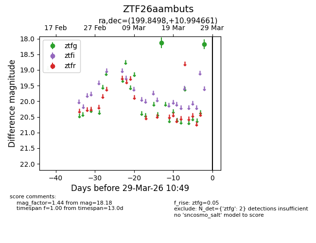
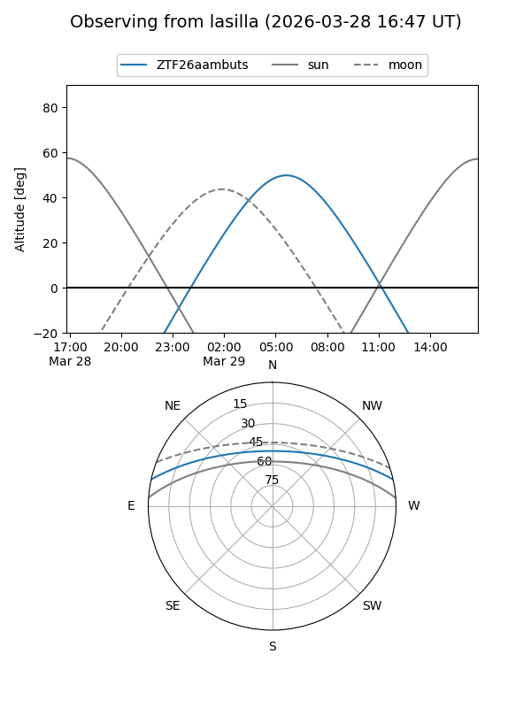
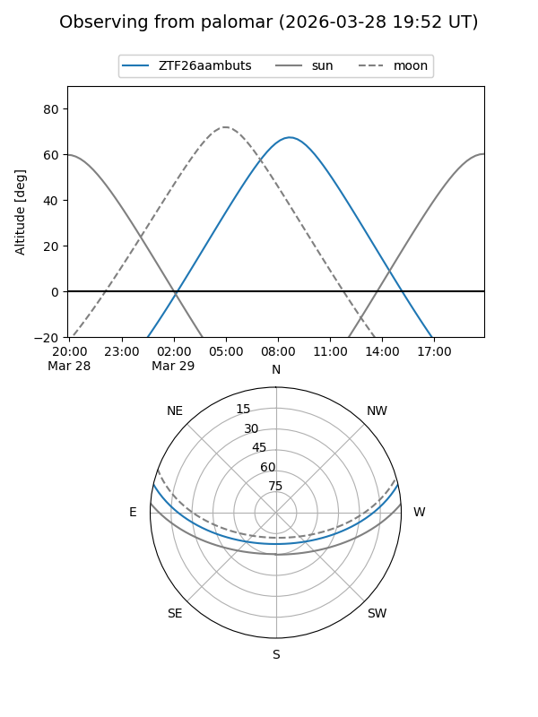

ZTF26aambuts
Target ZTF26aambuts at 2026-03-29 10:52
Aliases and brokers:
FINK: link
Lasair: link
ALeRCE: link
alt names
ZTF26aambuts (ztf,fink_ztf)
Coordinates:
equatorial (ra, dec) = 199.8498,+10.99466
equatorial (HMS+DMS) = 13:19:23.95,+10:59:40.78
galactic (l, b) = (326.4477,+72.57740)
Flags:
Photometry:
last ztfg=18.18
2 ztfg detections
Lightcurve

Visibility


Additional plots